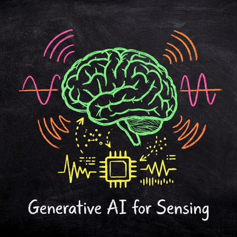
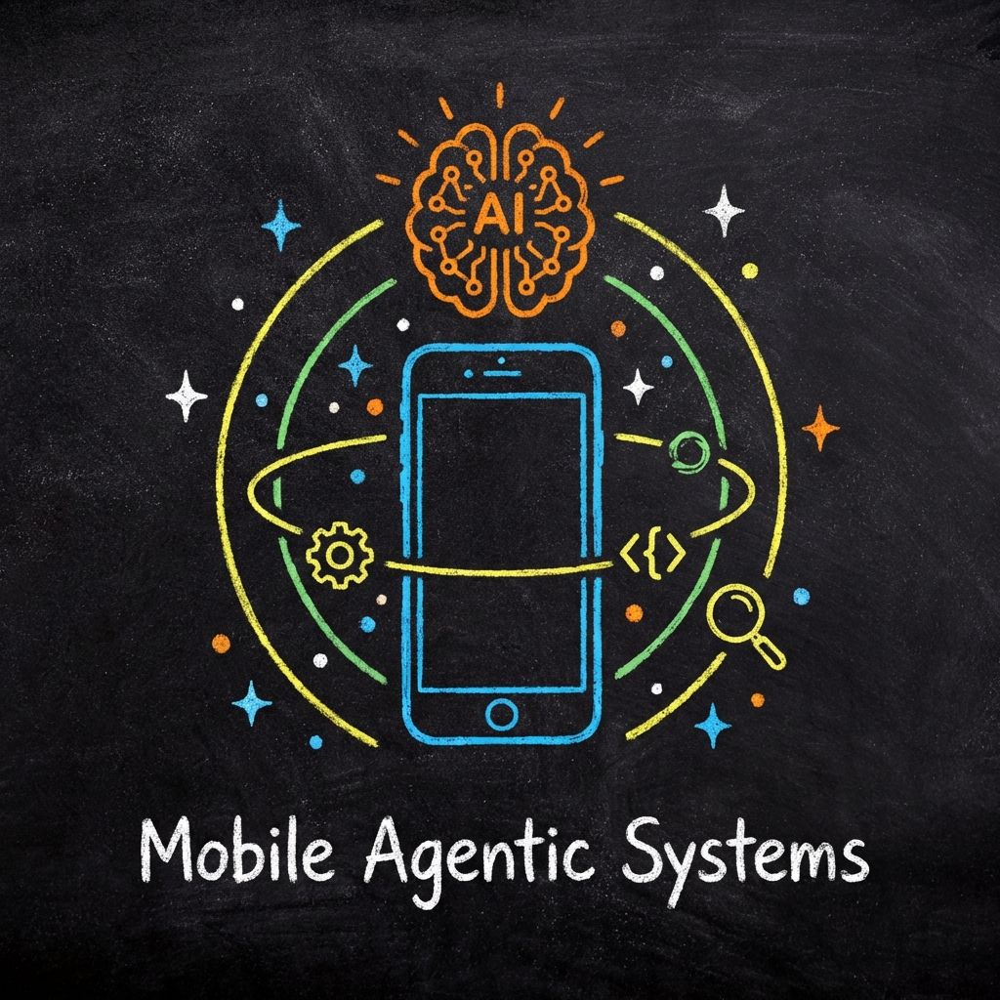

Research

Wireless & wearable sensing
Generative and cross-modal models that turn radio and IMU signals into gait, gesture and health information. XGait, iRadar, EMGSense.
Physical-layer security
Key generation and authentication from the wireless channel for IoT and vehicles. ChirpKey, Vehicle-Key, Wave-for-Safe.

Agents for embedded systems
LLM agents that program IoT hardware, and efficient LLM inference on edge devices. AutoEmbed, E²LLM.
Selected projects
Vehicle-Key: A Secret Key Establishment Scheme for LoRa-enabled IoV Communications
IEEE ICDCS 2022; extended in IEEE TMC